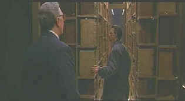

| Ninth
Gate, The(SE)/C+,A- |
| Artisan/2000/133/ANA 2.35 |
Maybe because I expect more from a
Roman Polanski film, The Ninth Gate disappointed me . It's well crafted film. It looks
great, all the parts are professionally put together, and there are even some interesting story
elements. But, the story is what let's this Polanski project down. It's potential laid waste. And
in the end it comes up hokey to the ninth degree.
 |
| Book Detective meets book collector.
©Paramount |
A globetrotting antique book dealer,
Frank Corso, contracts to authenticate a rare book for a billionaire collector Boris Balkan.
Corso is a slick operator moving through the dust of old books like a savvy sailor through rocky
fogbound shores, but in The Ninth Gate he's traveling uncharted waters. Death plagues
Corso's hunt for The Nine Gates of the Kingdom of Shadows. From New York to Europe, Corso
plots his course with little of the caution associated with antiquarians.
As a detective yarn, The Ninth Gate plots a steady but very standard
course, but the cinematic waters get mighty rough with the introduction of supernatural
elements. The story ultimately focuses and climaxes on the other worldly. Unfortunately, the script
is far less than convincing in matters of the occult. Between a rich cult book worshippers and an
angel flirtingly flitting from city to city, the film never sets itself aright. The production
fails to bring any excitement to various locales ranging from America to European.
Johnny Depp, ever the interesting actor, is fine as Corso. Depp infuses
his screen energy with some disreputable slime, sliding from one European locale to the next. Frank
Langella has the tough task of making Boris Balkan seem like a reasonable sort of guy. Polanski
lets him flex his financial muscle rather bombastically. Lena Olin, ever ready to explore the dark
side, plays a recently widowed rich gal with a taste for the perverse and Emmanuelle Seigner, is
Polanski's angel.
The Ninth Gate DVD is almost worth buying for the Roman Polanski
audio commentary alone. The director is so knowledgeable about his craft and he shares lots of
insights with the audience. You do have to sit through the film to appreciate the commentary.
Artisan has done an outstanding job with The Ninth Gate in bringing
it to DVD. The transfer is very filmlike, preserving grain in tight patterns and reproducing color
accurately. Shadow detail is revealed with natural illumination. Images are sharp without excessive
edge embellishment. Blacks are lustrous and flesh tone delivered in subtle tones. The Dolby Digital
5:1 fires up with devilish ambiance whenever called for and dialogue and music are delivered with
clean precision.
|
|

Selections from the feature archive include articles on Akira Kurosawa,
Frank Darabont, Blonde Bimbos, Hollywood
Street Gangs, or Vietnam:
The Hollywood Pariah, and many more....
Body Parts

Hollywood's long fascination with parts of the body is explored
piece by piece.

The
Movie Poster Archive include extensive poster images from the films of stars like Susan Hayward,
Kirk Douglas, Katharine Hepburn and many more. This month's featured star is Clark Gable.


DVD Deals may be the
best site for all you high-tech bargain hunters. This site helps you find coupons and cheap dvds at
all the major online stores.

Home to The American Society of Cinematographers. Includes features from
American Cinematographer Magazine and more...
Avid-Collector Posters

Great selection of big foreign paper, plus the home of J. Fields linen
service.
 
The Big Combo has
style to spare in reviewing films and producing feature articles. Check out their special
"Lingo" section.

Check out these selections from our DVD Review Archive. New releases
are constantly in our face, but catalog gems should not be forgotten.
|